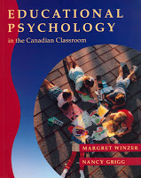

|
EDUCATIONAL PSYCHOLOGY
|

|
- Educational Psychology: in the Canadian Classroom
Margaret Winzer, Nancy Grigg
1992 | Prentice Hall Canada Inc. Scarborough
- Education Psychology CONTENTS
- education psychology notes
- education psychology summary notes
- course research report
|
REPORTS
- Computer Aided Learning Report
- Overview of Computer Aided Learning (1994)
- Educational psychology research paper
- summary:
- CAL has great potential which has yet to be discovered and exploited. CAL complements the infrastructure of today’s society, provides learning opportunities for everyone, and has the potential for motivating people in discovery and learning. Technological advances, along with correspondence between educational psychologists and authors of courseware, is slowly changing the browse and retrieve mode of CAL into a network of activities, providing a more effective way of learning. A change in attitudes in higher education could promote computer aided education to the levels that computers have been integrated in the rest of society.
STUDY SKILLS
[back to vault]
|